Underwater ROV
I was a team captain and a programmer for South Shore Robotics, an underwater ROV team located in Bridgewater, Nova Scotia, for three years. During this time, I was exposed to Python programming, Arduino, Raspberry Pi, Linux, multithreading, and numerous other engineering-related skills. In 2019, we advanced to the International MATE ROV Competition.
The team and I constructed an underwater remotely operated vehicle (ROV) designed to meet the needs of the Eastman Company of Kingsport, Tennessee. The company had issued a request for proposals (RFP) for an ROV that could operate in the freshwater environments of Boone Lake, Boone Dam, and the South Fork of the Holston River. Specifically, to complete tasks related to ensuring public safety, maintaining healthy waterways, and preserving local history of the Civil War era.

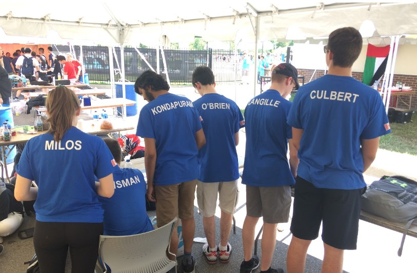
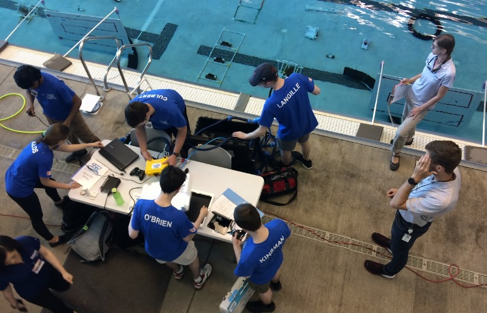
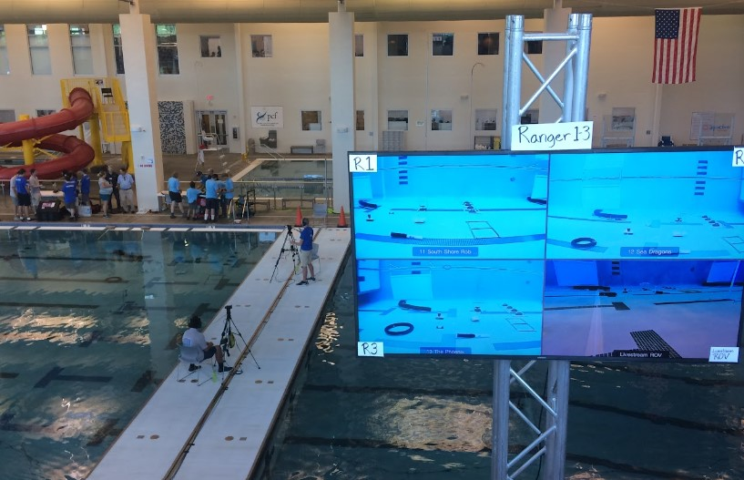
MATE International ROV Competition, 2019
Hardware
Hardware Consisted Of:
- Carbon fiber frame
- BlueRobotics T100 & T200 Thrusters
- Waterproof linear actuator motor for claw
- Bilge-pump motor and propeller for mini-ROV
- Xbox controller, Raspberry Pi 3B+, Adafruit PWM motor servo hat
- Lights and wide-angle, low-light cameras
- 3D printed claw and thruster enclosures
- Buoyancy tubes, architecturally buoyant foam, PVC tubes with end caps and an air hose
- Winch for heavier payloads
Main ROV
- Pitch, roll, yaw, vertical and forward/backward movement
- Sinking, rising and neutral buoyancy
- Strong claw used to lift differently shaped/sized objects and open/close quickly for timely task completion
- Illuminated path to allow operator to be aware of their surroundings
- Cameras provided operator with a view of the claw, underside hook, and general surroundings of the ROV via Ethernet and video multiplexer
Mini-ROV
- Slides out from the bottom of main ROV to help inspect drain pipes for mud and other debris
- Made as small as possible to give room for other tools
- Utilizes bilge pump motor with a propeller to create thrust and is in a tricycle formation to smoothly move in the drain pipe
- Equipped with a light and camera to provide a clear visual
- A Cat6 cable connects the mini-ROV to the main ROV where power is provided
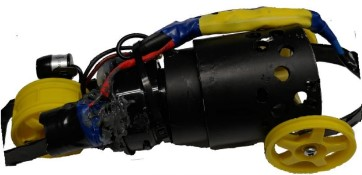
Hardware Diagram
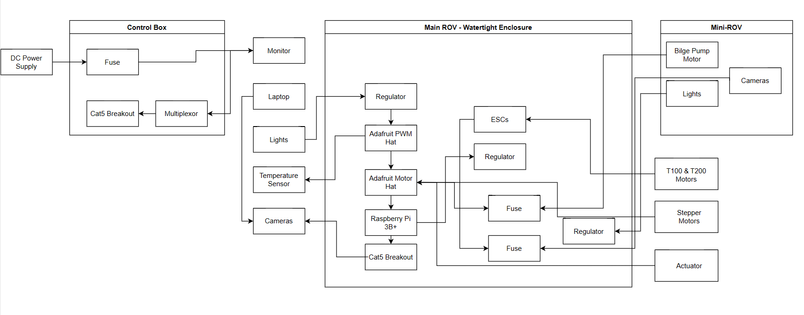
ROV Hardware Design
Structural Features
- Ten layers of carbon fiber layered at 45 degree angles ('quasi-isotropic layup') provided a stiff, strong, and light frame, which we CNC milled to our desired shape
- For weight distribution, motors, cameras, and lights were placed in identical positions on either side of the ROV. A hook was mounted on the underside of the ROV for heavier payloads
- A tether sleeve was used to keep all of the crucial communication and power lines neatly assembled in one seamless cable. It consisted of an air compressor hose, CAT6 cables, and a power cable
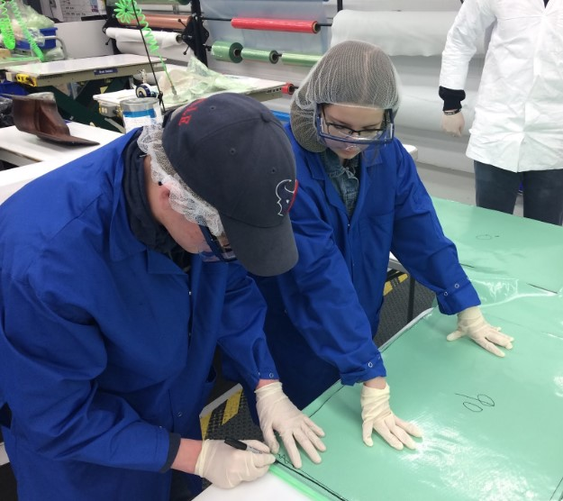
Software
Software Consisted Of:
- Multithreading
- Client socket for the microcontroller on the ROV
- Server socket for the surface laptop in Linux environment
- Moving using an Xbox controller
- Yaw, roll, pitch
- Forward/backward thrust
- Upward/downward thrust
- Micro-ROV forward/backward
- Claw open/close
- Winch roll up/roll out
- Reading temperature sensor
- Utilizing PWM and motor hats, linear actuator
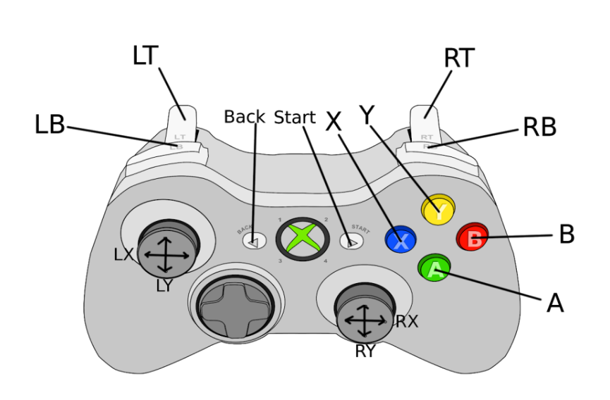
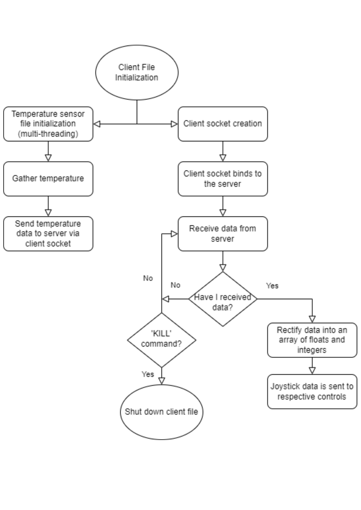
Client File Algorithm
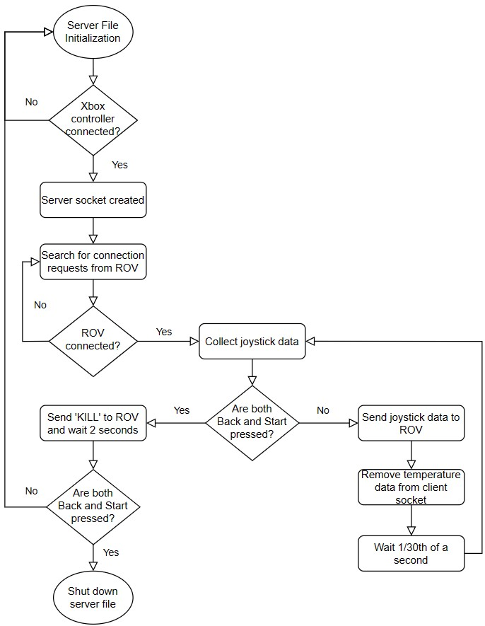
Server File Algorithm
Past Designs
2018 — MANTA
MANTA was built in 2018 through MATE for the University of Washington's Applied Physics Laboratory and was designed to locate wreckage underwater, return necessary components to the surface, install and retrieve an ocean bottom seismometer, and install tidal turbines in appropriate environments.
- Claw was an iteration of a 3D model we found online
- Constructed lift bag for recovering heavy debris using ABS piping and plastic bags
- Carbon fiber frame constructed with the help of STELIA North America Ltd
- RPi3 at the surface emulated Xbox controller data and sent it to onboard RPi3
- Onboard RPi3 interpreted controller data via Adafruit servo hat
- Blue Robotics electronic speed controllers received PWM signals and sent data to T200 thrusters
- A secondary method of controlling the ROV was available using BlueRobotics thruster commanders and Fathom-E Tether Interfaces
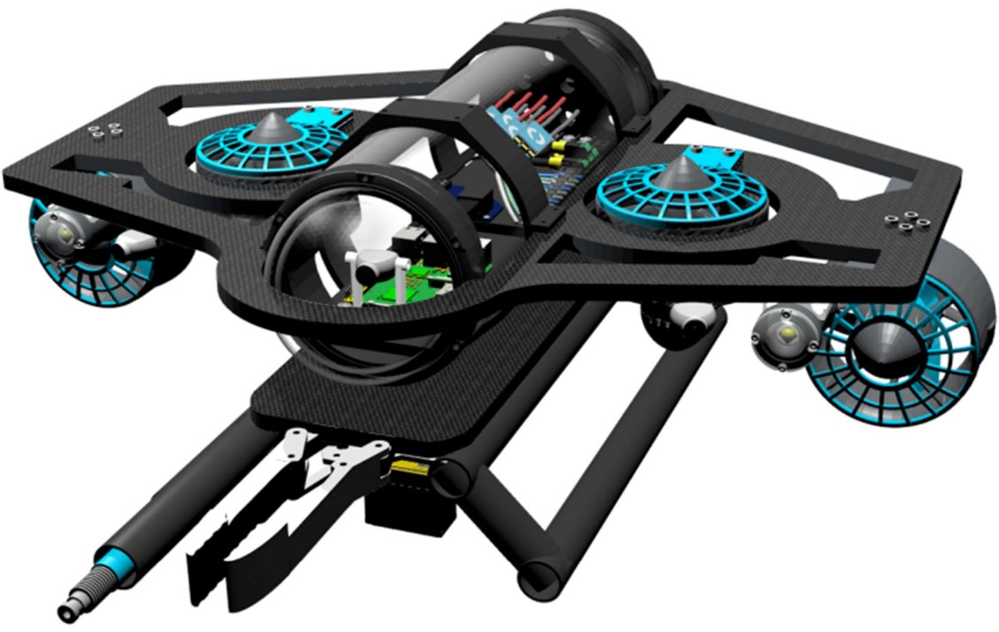
2017 — AEGIR
AEGIR was built for MATE as a solution to the Port of Long Beach's request for an ROV to assist in Hyperloop construction, water and light show maintenance, environmental cleanup, and risk mitigation at the Long Beach waterfront.
- Built using a modified MATE Pufferfish Kit which came with controller, bilge motors, PVC mounts and a tether
- Lego claw operated by a hydraulic system
- Our facilitator provided a camera made at the MATE Summer Institute for Teachers
- Pool noodle fragments for buoyancy
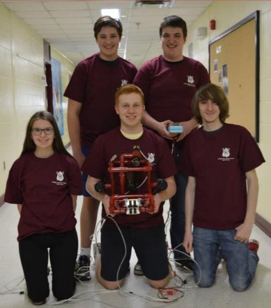